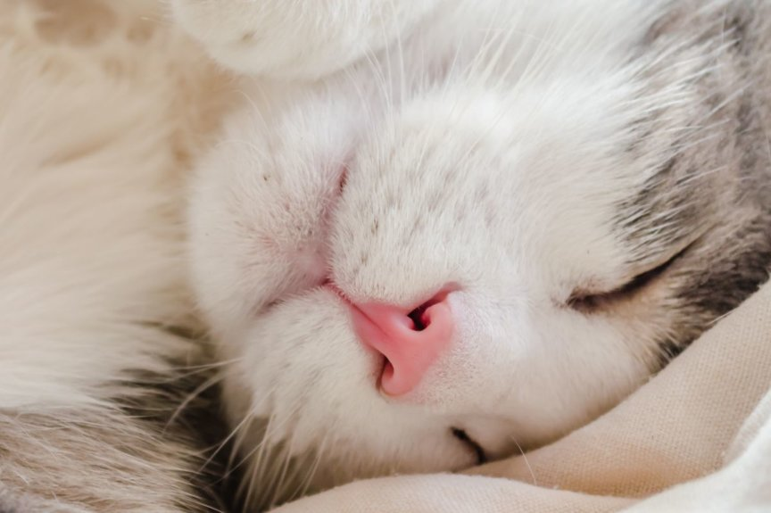
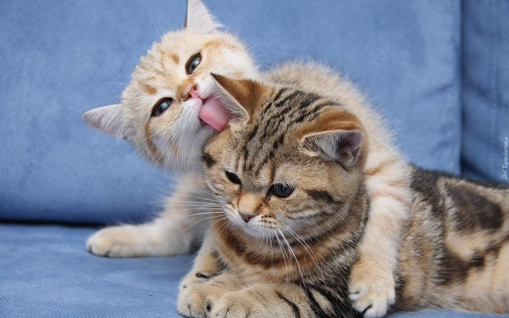
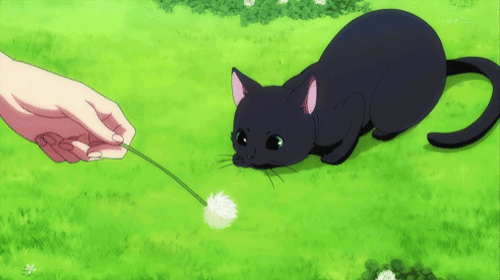
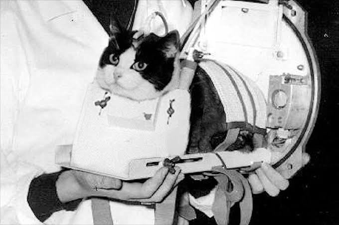
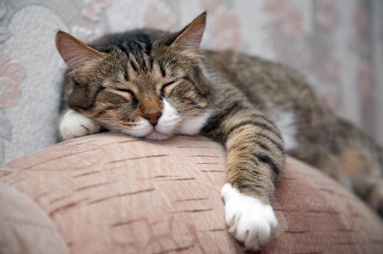
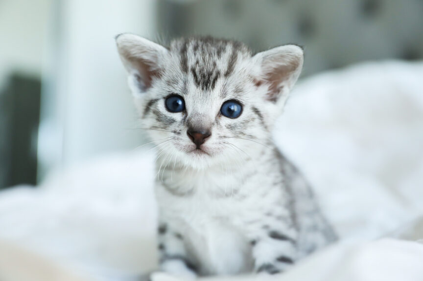
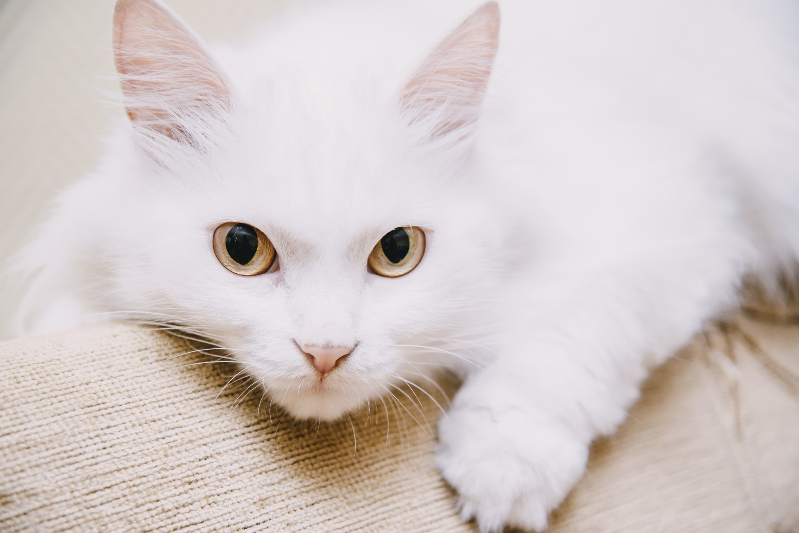

1. Koty nie mają obojczyka, dzięki czemu mogą wcisnąć się w każdy otwór, przez który przechodzi ich głowa.2. Nie ma dwóch identycznych kocich nosów - każdy z nich jest tak unikalny, jak u ludzi linie papilarne i daje inny odcisk.

3. Koci język jest szorstki jak papier ścierny, co ma uzasadnienie praktyczne: brodawki na języku, pokryte malutkimi wypustkami z keratyny o długości 2 mm (których twardość niekiedy porównywana jest do paznokci) pozwalają kotom nie tylko rozdrobnić karmę, ale również umyć się. Na każdym kocim języku jest około 30 takich keratynowych wypustek.

4. Kot jest bardzo bliskim krewnym tygrysa - ich DNA jest zbieżne aż w 95,6 proc, co widać głównie po ich zachowaniu oraz zachowaniu się ciała podczas polowania.

5. Kot poci się przez poduszki łapek. Co ciekawe, na przednich kocich łapkach jest po pięć poduszek, a na tylnych - po cztery.6. 18 października 1963 roku Felicette, znany również jako 'Astrocat’ był pierwszym kotem który wyruszył w kosmos.

7. Koty witają się nawzajem dotykając swoje nosy.8. Koty śpią 70% swojego życia.

9. Egipski Mau jest najstarszą rasą kota.

10. Większość kotów nienawidzi wody, gdyż ich futro jej nie izoluje. Jedną z nielicznych ras, które uwielbiają pływać, jest Van turecki - koty z tej rasy potrafią nawet nurkować.
